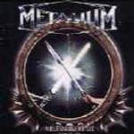

|
|
||
Metalium : Millennium Metal - Chapter One (1999) |
|

http://www.metalium.de |
1. Circle of Fate (Intro) 1:47 |
9/10 |
|
Millenium Metal es un disco de auténtico Power Metal. Canciones rápidas, doble bombo marcando el ritmo en varias de ellas, buena producción, aunque quizá las guitarras merecían un poco más de protagonismo en algunas ocasiones, y un cantante, Henning Basse, con una voz muy potente y que alcanza tonos bastante altos. El disco es un album conceptual, construido sobre una historia fantástica en la que los dioses del metal necesitan de un joven para salvar al mundo. Para ello convertirán a este joven en un auténtico guerrero de metal gracias a un elixir llamado Metalium... "Circle of Fate", la tétrica introducción instrumental, abre el camino a "Fight", quizás la canción más potente del disco, donde Henning Basse demuestra que realmente sabe gritar ;-). "Break the Spell" es otra de las canciones que sobresale, con el doble bombo marcando el ritmo y la voz de Basse demostrando de lo que es capaz, al igual que hace en "Metalium". "Metamorphosis" es una balada con un estribillo realmente desgarrador, sin duda el momento cumbre del disco, cuando el joven humano bebe el elixir y se transforma en el guerrero de metal. "Void of Fire" es junto a "Fight" la canción más fuertes del disco, con un ritmo endiablado y metiendo cierta distorsión a la voz de Basse. Merece la pena destacar los solos de guitarra de esta canción que, aunque no son especialmente complejos, son realmente rápidos. Otros elementos del disco que también sobresalen son la canción "Strike Down the Heathen" en general, y los estribillos de "Pilgrimage" y de "Metalians". Mención aparte para la excelente versión de la canción de Deep Purple, "Smoke on the Water", a doble bombo y realmente potente, que aparece como Bonus en mi copia del disco. |
||
Rubén Béjar |
||